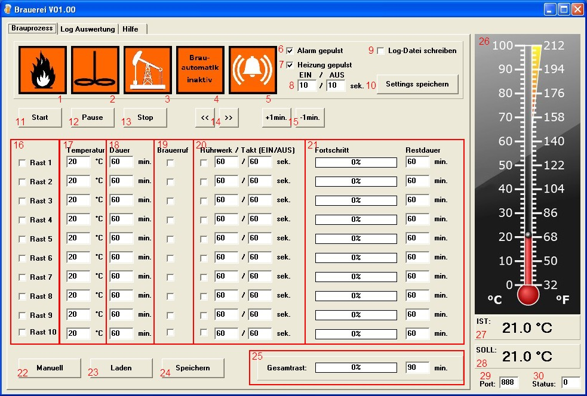
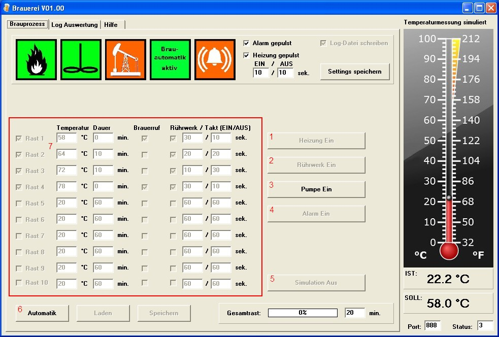

Hilfe Datei zu Brauerei V 1.00 – by Emilio - HOME
Brauprozess:
Der Brauprozess unterteilt sich in zwei Bildschirmdarstellungen:
Automatik
Manuell
Automatik:

Zustandsanzeige für Brenner ( grün=an / rot=aus )
Zustandsanzeige für Rührwerk ( grün=an / rot=aus )
Zustandsanzeige für Pumpe ( grün=an / rot=aus )
Zustandsanzeige für Brauautomatik ( grün=an / gelb= pause / rot=aus )
Zustandsanzeige für Alarm ( grün=an / rot=aus )
Alarm pulsen oder Dauersignal
Heizung wird vor Erreichung der Zieltemperatur mit unter (8) eingestelltem Verhältnis gepulst.Die Temperaturdifferenz bei welcher gepulst wird, kann in der Setup.txt eingestellt werden.
Logdateien während des Brauprozesses als Dokumentation erstellen ← Details
Starteinstellungen für (6)-(9) und (16)-(20) speichern
Brauprozess starten
Brauprozess pausieren
Brauprozess stoppen
Rast überspringen / zurück springen
Rastzeit um eine Minute erhöhen / reduzieren
Aktivierung für die einzelnen Rasten
Ziel-Temperatur für Rast (Eingaben 0-100 erlaubt)
Rastdauer für Rast (Eingaben 0-999 erlaubt, 0= Heizphase)
Brauerruf am Ende der Rast (Alarm)
Rührwerk für Rast verwenden inkl. Ein/Aus-Takt (Eingaben 0-999 erlaubt)
Fortschritt der einzelnen Rasten während des gestarteten Automatikbetriebs ( nicht editierbar)
Umschaltung zwischen Manuell und Automatik Bildschirm
Rezept laden (16)-(20)
Rezept speichern (16)-(20)
Fortschritt des Gesamtprozesses während des gestarteten Automatikbetriebs ( nicht editierbar)
Grafische Ist-Temperatur-Anzeige
Digitale Ist-Temperatur-Anzeige
Digitale Soll-Temperatur-Anzeige
Anzeige der LPT-Port-Nummer ( nicht editierbar)
Anzeige der LPT-Port-Ausgabe ( nicht editierbar)
Manuell:

Heizung manuell Ein/Aus (nur bei nicht gestarteter Automatik bedienbar )
Rührwerk manuell Ein/Aus (nur bei nicht gestarteter Automatik bedienbar )
Pumpe manuell Ein/Aus
Alarm manuell Ein/Aus (nur bei nicht gestarteter Automatik bedienbar )
Simulation Ein/Aus (nur bei nicht gestarteter Automatik bedienbar ). Bei eingeschalteter Simulation wird die Temperaturdatei durch das Programm geschrieben. Bei eingeschalteter Heizung erhöht sich die Temperatur um 1,2°/Minute bei ausgeschalteter Heizung sinkt die Temperatur um 0,6°/Minute.
Umschaltung zwischen Manuell und Automatik Bildschirm
alle Rezepteinstellungen können auch im Manuellen Bildschirm verändert, gespeichert oder geladen werden. Details siehe Automatik.